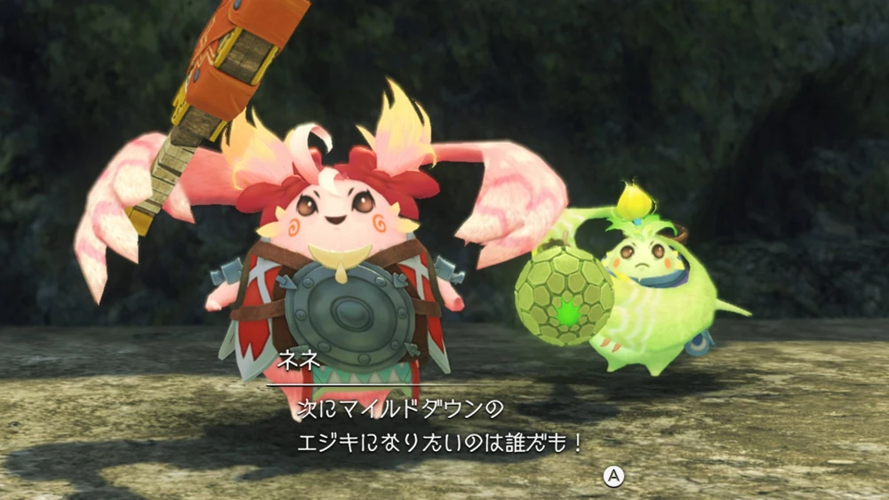
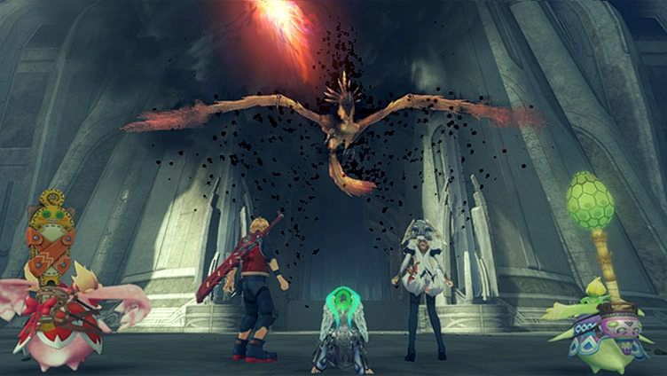

Plot
A year later, Shulk informs Melia that the floating remnants of the Alcamoth have been spotted close to the remains of Bionis' Shoulder. A laser strike from Alcamoth shoots the two down as they attempt to explore in Junks alone, and they crash land on the shoulder. In search of bravery, they save Nene and Kino, two young Nopon who stowed away aboard Junks. The two members of the party are Riki's children, Nene being his biological child and Kino being his adoptive child. They meet Maxis, who is in charge, at Companions' Cape, an encampment of High Entia. He informs them that the Fog King, a novel and strange creature against which they have no defense, has driven the High Entia warriors from Alcamoth. They have made numerous attempts to damage the Fog King because they feel compelled to retake their home, even if they are unable to do it. There are civillian survivors in another town, Gran Dell; the troops have left since there are a number of Machina living there, and they blame the entire Machina, especially Gael'gar, for Egil's attack on the Bionis. The group goes to try to defeat the Fog King after Melia says that she and Shulk might be able to do so.
They discover Telethia encircling Alcamoth, which is overgrown and covered in debris. They save Teelan from what they believe to be the Fog King in front of the Imperial Palace, but it's actually just a Fogbeast Taos. When it's defeated, Teelan informs them that it wasn't the king. After being zapped by the laser once more, they flee and follow Teelan to his lab on the shoulder, where he and his "Big Sis" reside. Gael'gar overhears Shulk recalling that Teelan wants to figure out how to return Telethia to their High Entia selves. To Melia's amazement, they arrive at the lab and learn that Tyrea is Teelan's protector. Speaking to Melia alone, Tyrea explains that she walked the Bionis' ruins after it was destroyed, preparing to die, until she came upon Teelan and saved his life a while back. She has devoted herself to Teelan's research ever then. Unnoticed, Gael'gar is once more spotted eavesdropping.

The group travels to Gran Dell to meet Radzam, a Machina researcher that Teelan knows, who informs them that the remaining Telethia are inadvertently enclosing the Fog King inside Alcamoth by forming an ether barrier around it. They comply with Radzam's request that the group bring Teelan's notes to him, but they ascend the Eternal Zenith first, where they observe another rift developing. On the Soltnar Seal Island, a number of Ponio are impacted by the fog and turn into aggressive fogbeasts when they come into contact with it. The group returns to Gran Dell to notify the locals after beating them, only to discover that their Armu have already turned into fogbeasts. According to Radzam, the rift is widening and will eventually impact more creatures—possibly all of them. The group decides they will need Teelan's study to stop this, so they go to the lab.
As the group arrives, Tyrea and Teelan are attacked as they exit the lab; Gael'gar, who has obtained two Andos units, tried to kill the two since he feels that the pure-blooded High Entia shouldn't be brought back from their Telethia forms. They quarrel after Melia chastises him for his narrow-mindedness. Gael'gar is furious that Melia does not share his beliefs. When a Telethia arrives, he is chased away, and Melia dashes into the flaming lab to salvage what research she can. Following her, Shulk dashes in, and they come out carrying only one book: the Telethia Research. Unconscious, Melia is brought to Gran Dell and treated with water ether, just like she was when she first met the group in Makna Forest. Tyrea scolds Melia for putting her life in danger, but she changes her mind after being informed that Melia saved a very important book. After Shulk comes to the conclusion that he can modify his Monado Replica EX to hurt the Fog King by obtaining some high-quality ether crystals, the group sets out to locate them in Zekr Marga Quarry before heading back to Gran Dell.

A Mammut Fogbeast attacks Gran Dell when they get back, but the group defeats it. While Tyrea defends the gate, Melia proposes that she call the Companions back from their retreat to protect Gran Dell while the party tackles the Fog King. Melia persuades Maxis to return to Gran Dell in time to save Tyrea's life as the group arrives and a powerful Fogbeast threatens the troops at the cape. After Radzam and Maxis make up, the group travels to the Imperial Villa, Melia's former residence, where Tyrea had seen the Fog King. Her ancient ceremonial mask serves as the transporter key, which she hands to Melia.
When they reach the villa, the group attacks the Fog King, an irrational, angry monster shaped like a Guldo and composed of fog and flames, but they are unable to kill it even with Shulk's enhanced weapon. Closing the rift might negate its strength, according to Shulk. Telethia then start hurling themselves into the rift, destabilizing it with their devastation. The Fog King and the rift are destroyed when Melia musters her might and unleashes a massive wave of ether. While Shulk and Melia believe the future is secure from that threat, Nene and Kino dance joyfully. To the satisfaction of Riki and the other partygoers, they return to Gran Dell, and stills over the credits reveal that Shulk, Nene, and Kino then make their way back to Colony 9. While Teelan and Tyrea continue their research, they inform the people of Colony 9 about the Shoulder; eventually, with Colony 9's help, Alcamoth is rebuilt. Residents of Colony 9 and Alcamoth come together to witness Melia's coronation and official inauguration as Empress of the High Entia once Alcamoth has been reconstructed.